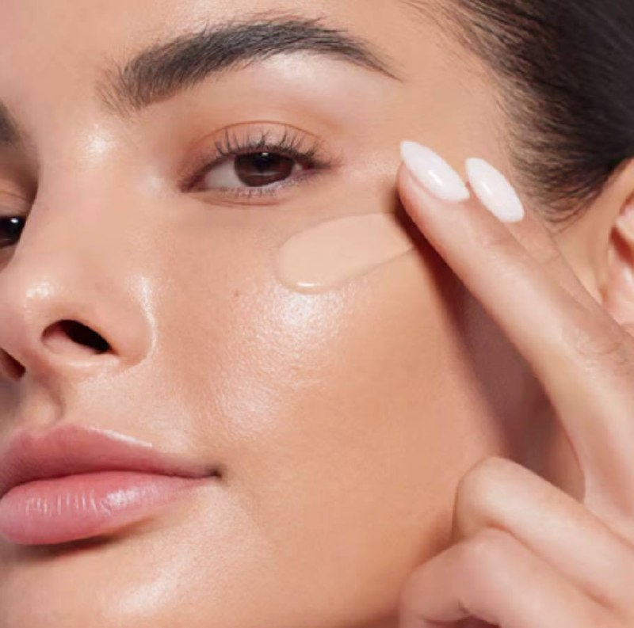
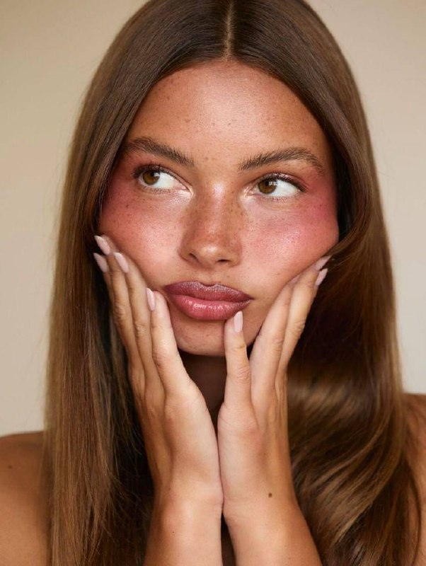
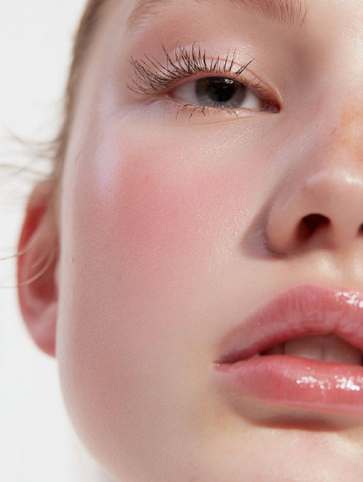

THE LOCA SOUL
LOCA هو براند سعودي للجمال صُنع بشغف ليعكس الأناقة العصرية والجمال الطبيعي بمنتجات تناسب المرأة السعودية وتفاصيلها اليومية. نؤمن أن المكياج ليس لإخفاء الجمال، بل لإبرازه بثقة ونعومة.
LOCA LAB

تعلمي طريقة اختيار الدرجة المناسبة لبشرتك للحصول على تغطية طبيعية ولمسة متناسقة.
قبل اختيار الدرجة، جرّبي المنتج على منطقة قريبة من لون الوجه وانتظري دقيقة حتى يثبت اللون. اختاري الدرجة الأقرب لبشرتك لإطلالة طبيعية.

خطوات بسيطة للحصول على إطلالة وردية ناعمة مناسبة للاستخدام اليومي بلمسة أنثوية.
للحصول على لوك وردي ناعم، استخدمي بلاشر خفيف مع مرطب شفاه لامع وادمجي اللون جيدًا حتى يظهر بشكل طبيعي.

نصائح للحصول على بشرة مضيئة ومكياج يدوم لساعات بإشراقة طبيعية وناعمة.
لثبات اللمعة، جهزي البشرة بالترطيب قبل المكياج واستخدمي طبقات خفيفة من المنتج بدل كمية كبيرة مرة واحدة.